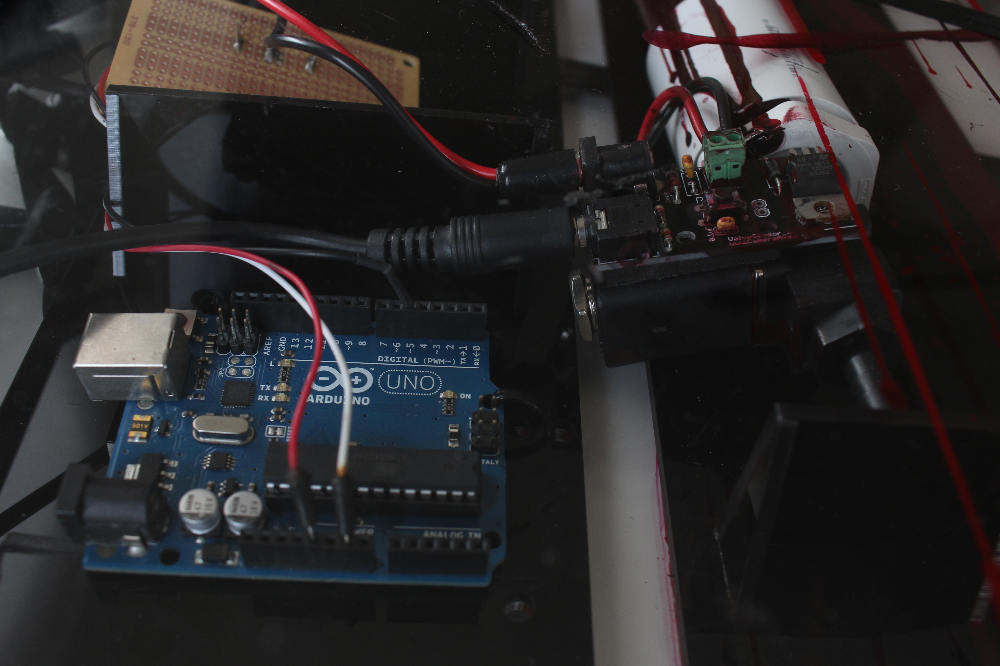
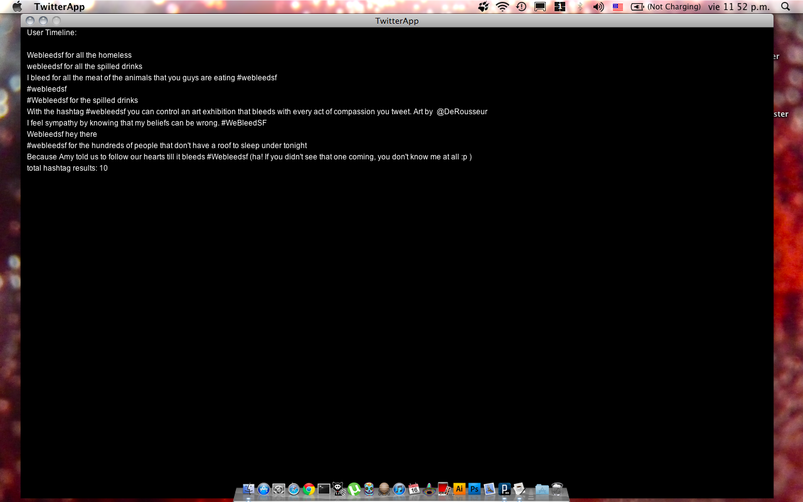
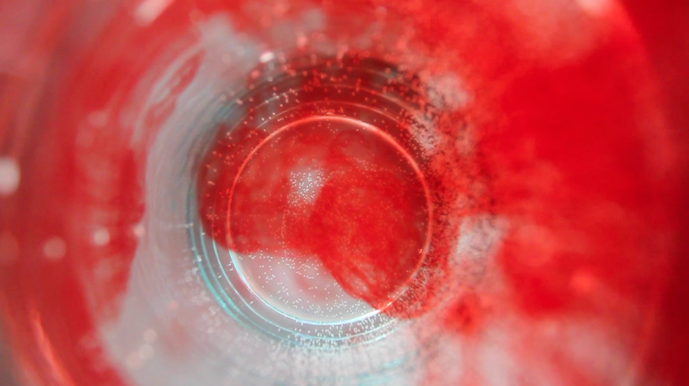

#WeBleedSF
Interactive system controlled with a twitter hashtag
Context
Observation People express their compassion towards others through social media, but they won't look up a see the person asking for help right in front of them.
Proposal A symbolic gesture of empathy and communion expressed through a machine that bleeds for us when we acknowledge the pain of others using twitter.
Other Details
Challenges
Learning the tools to build this system:
• programming basics
• arduino hardware and programming
• projection mapping
• laser cutting
Results Recognition from the press: GevMag and SF Examiner Timeline 2013. Showcased at the Gala Vernissage at The Old Mint of San Francisco May 2014.
Concept
My interest in collective affect gave birth to "We all bleed the same way", an interactive system that invites people to acknowledge the suffering of other people around them and create a moment of empathy, a connection to other psyches (minds, souls).
The mechanism consists of a twitter application, an arduino, an electronic valve for liquids, a vessel full of water and a camcorder streaming live to a projector away from the system.


By tweeting #webleedsf the audience activate the mechanism that drops red ink into water and this is projected in a large wall or screen.
The application made in processing reads the data coming from twitter and communicates with the arduino, which is in charge of controlling the aperture of the valve according to the data received.
In this video you can see and listen how the valve opens every time there's a new tweet.

Live tweets

This is the real time image projected

Projection in the courtyard. Vernissage Opening of SFAI MFA Exhibition at the Old Mint. Credit of image to instagram.com/sanfranciscoartinstitute.
Making
Doing and learning
The technical challenges to develop this piece allowed me to learn arduino hardware and software. Before starting my master degree I had not knowledge of it. Today I can code and create circuits of my own creation and understand other people’s code.
When twitter's API changed I didn't have time to learn it myself. Developer Kristina Durivage assisted me with the connection to twitter and I developed the connection between twitter info coming and arduino.
Twitter app screenshot and Illustrator paths for lasercutting